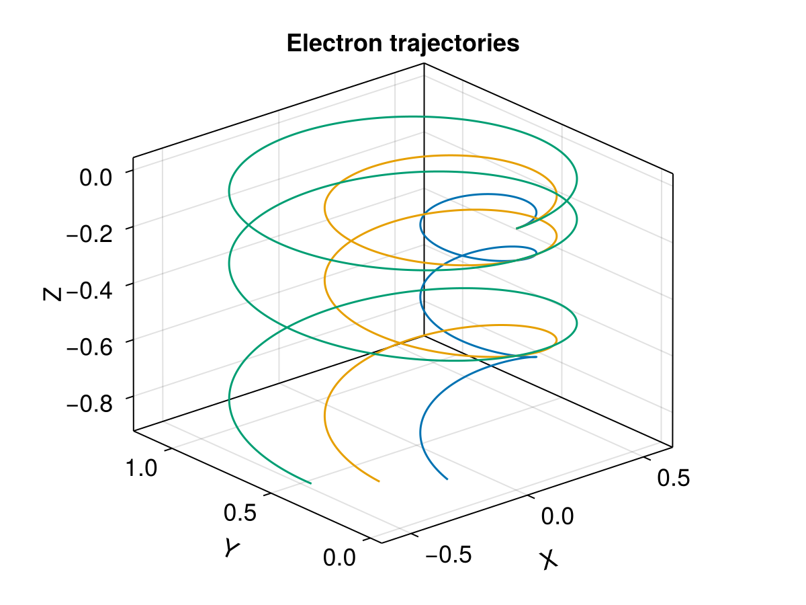
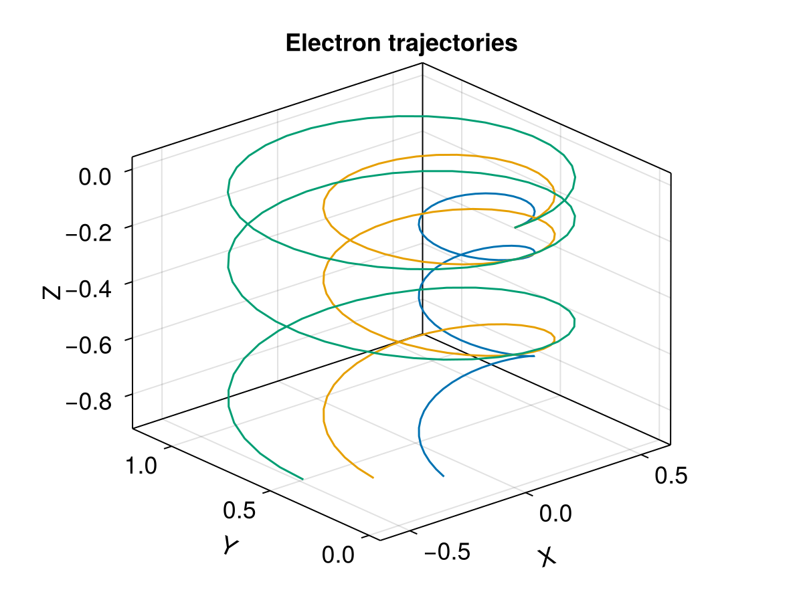

Ensemble tracing


This example demonstrates tracing multiple electrons in an analytic EM field and how to take advantage of the multithreading support in the ODE solver. A multiproc version is also available. Check the official documentation of DifferentialEquations.jl for details. In performing test particle tracing, we want to share the field information for all particles. This can be achieved in the ensemble problem with safetycopy=false.
using TestParticle
using OrdinaryDiffEq
using StaticArrays
using CairoMakie
"Set initial state for EnsembleProblem."
function prob_func(prob, i, repeat)
prob = @views remake(prob, u0=[prob.u0[1:3]..., i/3, 0.0, 0.0])
end
# Initialization
B(x) = SA[0, 0, 1e-11]
E(x) = SA[0, 0, 1e-13]
x0 = [0.0, 0.0, 0.0] # initial position, [m]
u0 = [1.0, 0.0, 0.0] # initial velocity, [m/s]
stateinit = [x0..., u0...]
param = prepare(E, B, species=Electron)
tspan = (0.0, 10.0)
trajectories = 3
# Solve for the trajectories
prob = ODEProblem(trace!, stateinit, tspan, param)
ensemble_prob = EnsembleProblem(prob; prob_func, safetycopy=false)
sols = solve(ensemble_prob, Tsit5(), EnsembleThreads(); trajectories)
# Visualization
f = Figure(fontsize = 18)
ax = Axis3(f[1, 1],
title = "Electron trajectories",
xlabel = "X",
ylabel = "Y",
zlabel = "Z",
aspect = :data,
)
for i in eachindex(sols)
lines!(ax, sols[i], idxs=(1,2,3), label="$i", color=Makie.wong_colors()[i])
end

We can also solve this problem with the native Boris pusher. Note that the Boris pusher requires a additional parameters: a fixed timestep, and an output save interval.
dt = 0.1
savestepinterval = 1
# Solve for the trajectories
prob = TraceProblem(stateinit, tspan, param; prob_func)
trajs = TestParticle.solve(prob; dt, trajectories, savestepinterval)
# Visualization
f = Figure(fontsize = 18)
ax = Axis3(f[1, 1],
title = "Electron trajectories",
xlabel = "X",
ylabel = "Y",
zlabel = "Z",
aspect = :data,
)
for i in eachindex(trajs)
lines!(ax, trajs[i]; idxs=(1,2,3), label="$i", color=Makie.wong_colors()[i])
end

Note that by default linear interpolation is applied when plotting the trajectories from the Boris method.
This page was generated using DemoCards.jl and Literate.jl.